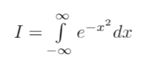
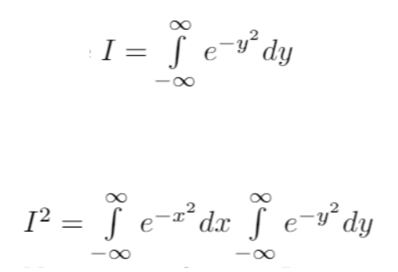
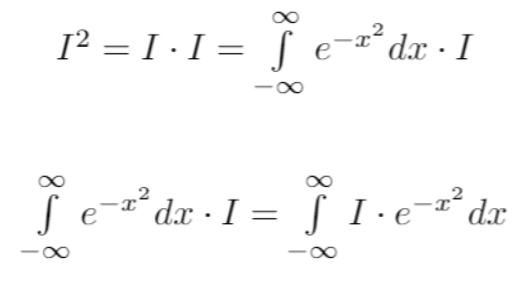
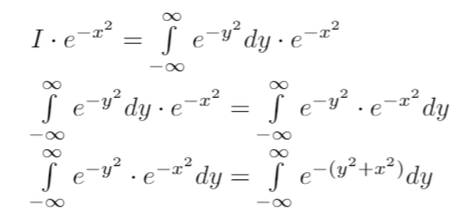
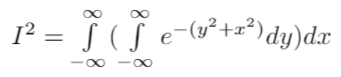
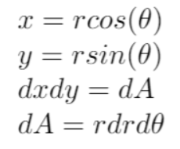
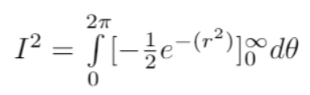
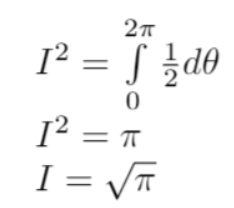

GAUSSIAN INTEGRAL DERIVATION
First we give a name to our integral. We call it I.

Note that x is just a ‘dummy variable’. The area exists regardless of what variable name we use. So, we can also write the following two equations:

Now, as I is just a constant, albeit one we don’t know the value of yet, we can use our normal rules for bringing a constant inside an integral

So far we haven’t done much substantive. Now we think hard about what the integral means. We take integrals of functions. If two functions take the same value everywhere, they are the same, and have the same area. With that in mind, we can make the following manipulations, if we view I*exp(-x²) as a function of x, i.e. something which takes in values of x as an input, and gives a number as an output.

Ok, that was a lot to take in. In the first line, we just rewrote I in its integral form with a different variable name. In the second line, treating I*exp(-x²) as a function, we realised that we can bring the exp(-x²) inside the dy integral, and this would still give the same output value for any input value of x. Finally, we used the rules of exponentiation.
Writing this out in full, we now have

Next comes the killer insight. Above we messed around with variable names and how to represent a function. Now we shift our perspective: this expression also represents the integral of exp(-(y²+x²)) over the whole 2D plane, with area element dA = dx dy. I.e. dx dy is a small rectangle on a plane, and exp(-(y²+x²)) is the height above that rectangle.
Next, we use the polar coordinate insights from earlier

We can evaluate the inner integral using the chain rule

And, into the promised land we now find ourselves:
